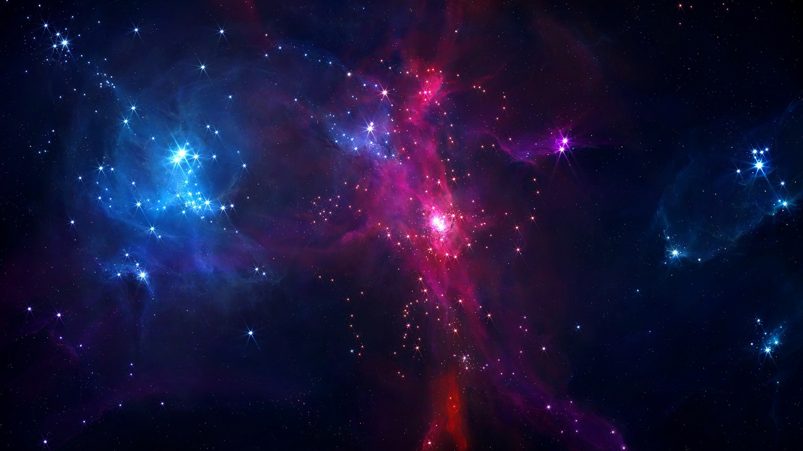

avant le lancement de la mission DART (Test de déviation d'un astéroïde double)
Hé, toi ! Voyageur de l'Univers ! Tu es sur le site du groupe Espacium, rassemblement de passionnés de l'espace et de ses recoins encore secrets.
"Un être humain est une partie du tout que nous appelons 'Univers'... Une partie limitée dans le Temps et dans l'Espace" - Albert Einstein
Sur ce site web, tu retrouveras toute l'information dont tu as besoin pour commencer ton périple aux fins fonds de l'univers. Commences d'abord par te familiariser avec les différents corps célestes de base, comment ils interagissent entre eux et quel est leur rôle. Puis tu pourras diriger ton attention sur les phénomènes spéciaux qui composent notre monde comme les trous noirs, les supernovas, les nébuleuses, etc... Enfin, découvre l'immensité de l'univers, le grand ensemble qui englobe tout ce qui existait, qui existe et qui existera, grâce à nos articles dédiés.
Vous souhaitez devenir membre ?
Les objets célestes sont des éléments très intéressants de l'espace
En savoir plusVenz en apprendre davantage sur les trous noirs, corps fascinants et énigmatiques
En savoir plusL'univers est en constante expansion. Même si ses limites nous sont encore inconnues, que connaissons-nous de sa structure ?
En savoir plusVous avez une question ? Vous désirez apporter votre soutien au groupe ?
Personnalités du Cosmos
Avant de poser une question, consultez la F.A.Q